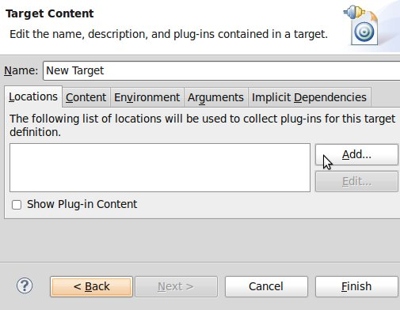
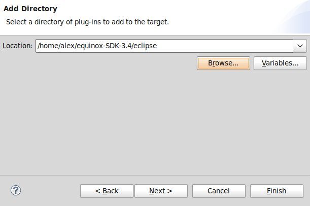
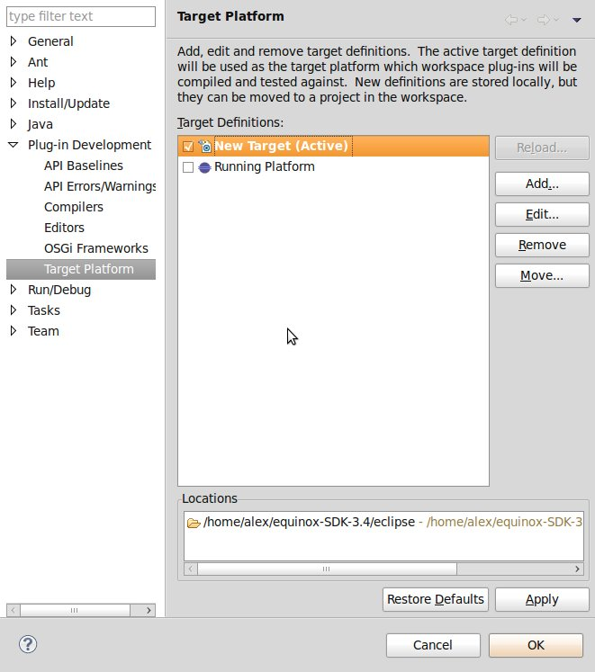

To be able to develop new Steps, you
should have an OSGi framework installed and
set up within Eclipse.
In general, it is possible to use any OSGi
implementation, but for convenience, this guide will show you how to
install Eclipse Equinox as the OSGi framework.
- Download Eclipse Equinox:
Go to http://download.eclipse.org/eclipse/equinox/ and download the Equinox Software Developement Kit:
For these examples, version 3.4 is used.
eclipse-equinox-SDK-3.4.zip
Extract it to any location.
- Setting up Eclipse Equinox:
In Eclipse, go to Window → Preferences.
Select Plug-in Development → Target Platform.
Click Add...
Initialize the target definition with: Nothing
Give any name for the target and create a new target location.
Click Add... and select the directory where you extracted the Equinox SDK.
For Example
eclipse-equinox-SDK-3.4/eclipse
Select your new target and click OK
 - Done!
You are now ready to develop new OSGi-Bundles with Eclipse.
Continue with Importing Anna-Plug-ins in order to import Plug-ins for development of new pipeline Steps.